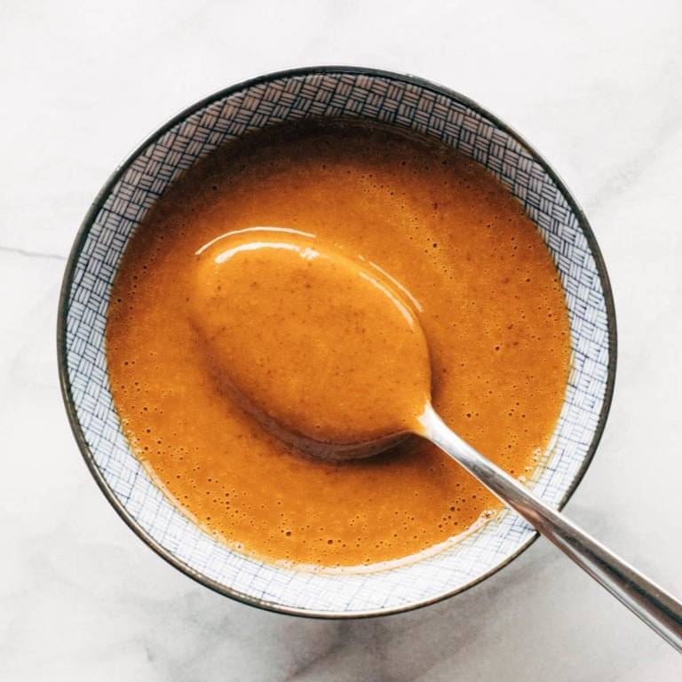

Peanut Sauce

Description
This fresh peanut sauce is a delicious alternative to buying premade.
This simple recipe can be made at home with only a few ingredients and is an excellent dipping sauce for many Thai dishes.
Ingredients
- 1 Cup dry roasted peanuts, unsalted
- 1/3 Cup water
- 2 cloves garlic, peeled and minced
- 1/2 tsp. dark soy sauce
- 2 tsp. sesame oil
- 2 Tbsp. brown sugar
- 2 Tbsp. fish sauce
- 1 tsp. lime juice
- 1/2 tsp. cayenne pepper
- 1/3 Cup coconut milk
Steps
- Add all ingredients to a food processor and process to desired consitency.